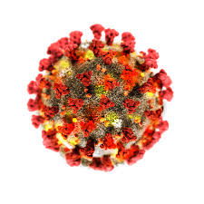
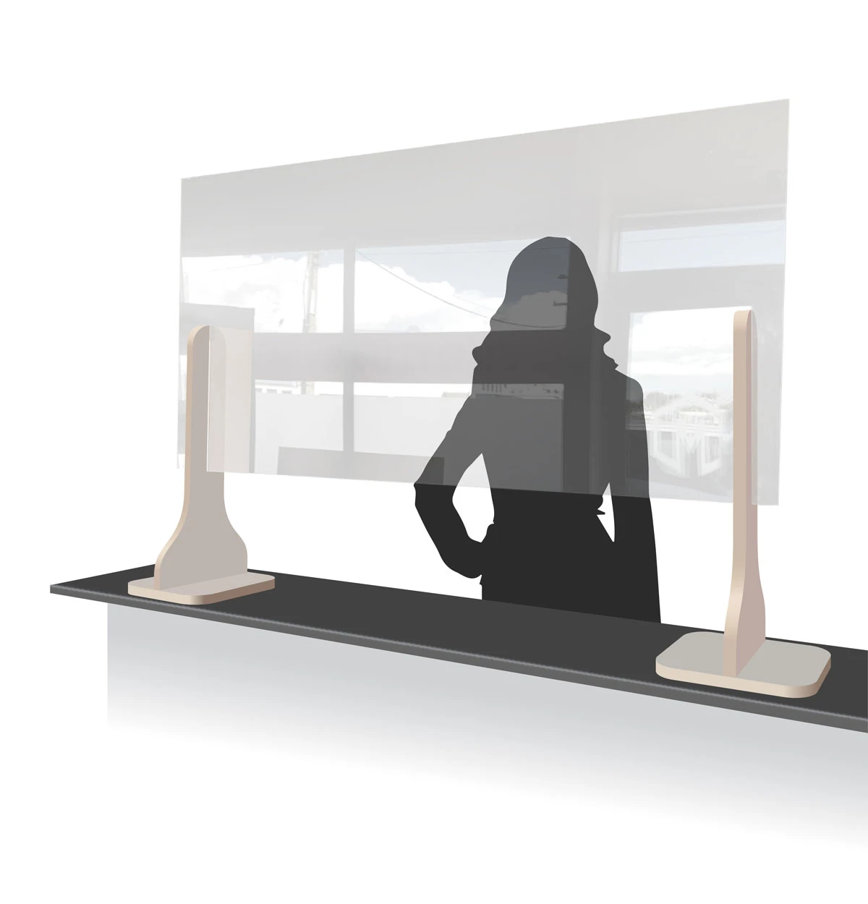
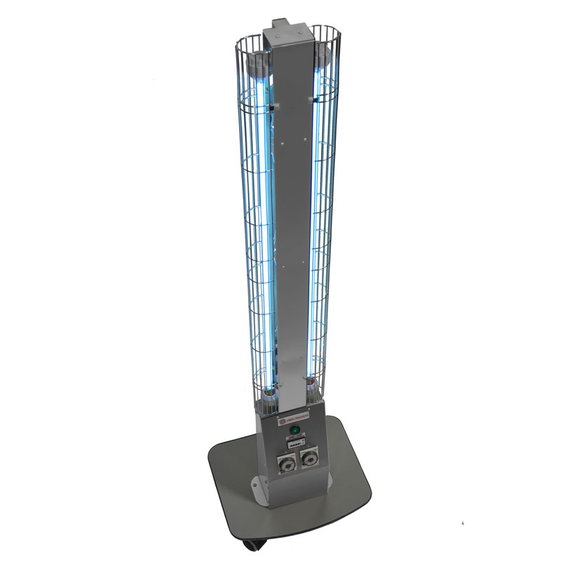
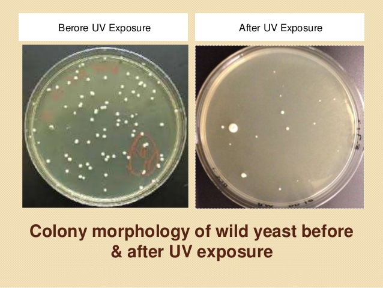
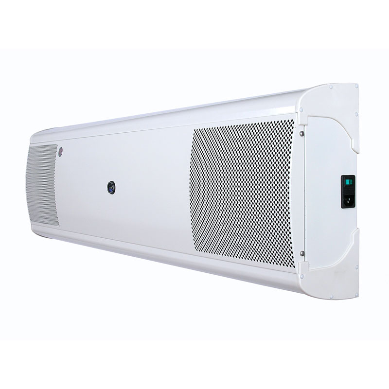

CovID-19
A mask can only stop so much we need more. One proven method of counter protection is partition seperation and the materials of choice are acrylic or
polycarbonate sheet. The reason for this is acrylics and polycarbonates are many times stronger and lighter
than glass is more flexible so can be molded or bent to practically any shape and much cheaper. Of the two
acrylic is generally the cheaper and more malliable. We can supply you with some standards
sizes or the better option is for us to come around and measure and quote depending
on you situation we can cater to your needs.

Our Responce to covID-19
We are currently offering counter top
shields that offer a high degree of protection against droplet propergation. Unfortunately, the germs that fly out from your nose and mouth when you cough or sneeze
travel much further than we might think. Offering a true physical barrier our acryic screens
can help protect your colleagues from this event. A sneeze or cough can travel at speeds of upto
100 miles an hour and a distance from 19 to 26 feet according to a study from
the Massachusetts Institute of Technology. Below is some common measurements
that may help but please contact us regarding your specific measurements and we can custom
make our shields to your requirements.

UV-C Germicidal Lamps
UV disinfection lights are revolutionizing the way people and businesses impose or maintain sanitation standards.
Using the UV-C range, or wavelengths between 200 nm and 280 nm,
the units are capable of eliminating up to 99% percent of dangerous viruses, bacteria, mold,
spores and other harmful microbes, including the COVID-19 corona virus.
It can achieve this rate without needing to come in direct contact with the surface or object.
Unlike other technologies, UV-C germicidal lights are tried and tested in the field and in
various operating environments. Even before the spread of COVID-19, UV lamps were already being used
to disinfect products on manufacturing lines, treat water in wastewater plants and passively clean hard-to-reach
sections of HVAC systems (coils, pans and vents). The wide and successful application of UV sanitation lights in these industries
reinforces their use cases during the COVID-19 pandemic.
What the Science Says
The experimental tests showed very high
effectiveness of UV-C light to eliminate high bacterial inocula.
The sanitizing method employed by this device affects a very wide
range of microorganisms and it has several advantages respect to
chemical based-sanitizing methods. This practice has been effective
and requires less personal than the manual cleaning and disinfection
based on chemical agents. UV-C radiation inactivates microorganisms causing
DNA damage by producing cyclobutane pyrimidine dimers (CPDs), altering DNA structure,
and thus interfering with DNA replication.
UVC sanitation is the safest method for getting rid of unwanted bacteria,
viruses, yeast, and even mold. Unlike disinfectant chemicals,
UV-C light does not leave any residue once the cleaning cycle is over.
That is why UVC light is being used more frequently by healthcare professionals,
and those who have members in their household who are susceptible to chemicals like kids,
the elderly, and pets.
UV-Gkiller-SuperStand

UV Sanitation Light Use Cases, Applications and Effectiveness
UV light Exposure Demonstration

UV Gkiller Air Purifier
